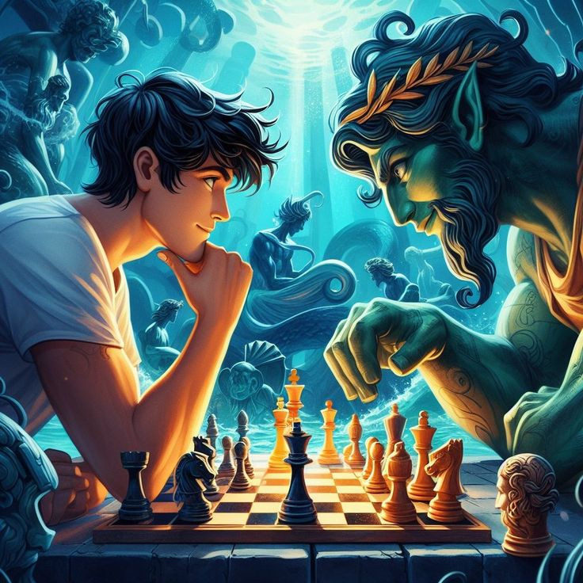

Percy Jackson é uma série de livros de fantasia escrita por Rick Riordan, que cativa os leitores com sua trama envolvente e personagens memoráveis. A história gira em torno das aventuras de Percy Jackson, um adolescente comum que tem sua vida virada de cabeça para baixo ao descobrir que é um semideus, filho de um dos poderosos deuses do Olimpo da mitologia grega. No primeiro livro, "O Ladrão de Raios", somos apresentados à jornada épica de Percy enquanto ele luta para provar sua inocência após ser injustamente acusado de roubar o raio-mestre de Zeus. Acompanhado de seus leais amigos da Colina Meio-Sangue, Percy enfrenta uma série de desafios que o levam a descobrir mais sobre seu destino e a aceitar seu papel como herói. Ao longo dos livros subsequentes, Percy e seus companheiros se veem envolvidos em missões perigosas para proteger o Acampamento Meio-Sangue e impedir o ressurgimento do terrível titã Kronos. Enfrentando criaturas mitológicas, labirintos mortais e traições inesperadas, Percy demonstra uma coragem inabalável e uma determinação incansável enquanto navega pelas complexidades do mundo dos deuses. A série Percy Jackson não apenas mergulha os leitores em um universo rico em mitologia e aventura, mas também aborda temas importantes como amizade, lealdade e o poder da autoaceitação. Com sua escrita ágil e cheia de humor, Rick Riordan conquista tanto jovens quanto adultos, tornando essa saga um verdadeiro fenômeno literário que continua a encantar leitores em todo o mundo.
A série "Percy Jackson" cativa leitores de todas as idades com sua emocionante mistura de mitologia grega, humor, aventura e temas universais como amizade, lealdade e o poder do heroísmo juvenil. Ao longo dos livros, Rick Riordan apresenta uma narrativa envolvente e personagens cativantes, criando uma saga que ressoa com o público ao explorar a jornada de autodescoberta e crescimento de Percy Jackson em meio a um mundo de deuses e monstros.